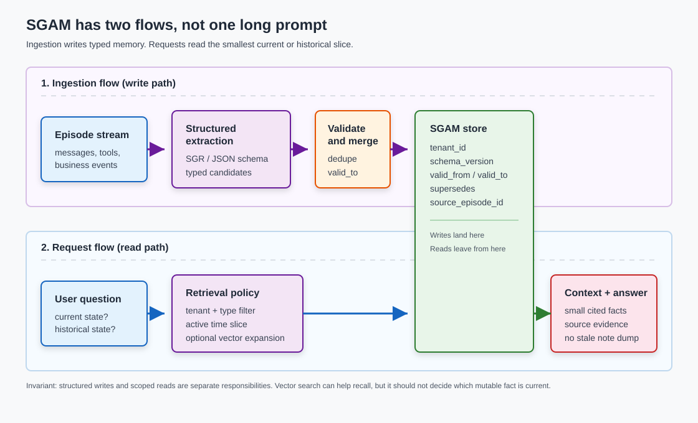

AI Agent Memory: Schema-Guided Typed State for Long-Running Systems
Agents fail in a boring way before they fail in a dramatic way: they remember too much as text and too little as state. A vector hit can find an old note, but it cannot prove that the note is still true.
Schema-Guided Agent Memory (SGAM) is the missing bridge between context engineering, agent memory architecture, and schema-guided reasoning. The short version: Schema-Guided Reasoning (SGR) makes the thought well-typed; SGAM makes the memory well-typed.
TL;DR: Treat durable agent memory as typed application state. Use schema-guided extraction on the write path, store memory records with tenant scope, validity windows, supersession, provenance, and schema versioning, then retrieve the smallest current slice on the read path. Vector search can stay in the system, but it should not be the only source of truth for facts that change.
The context-window trap
The context window is a working set. It is not durable memory, and it is not a database.
Long-running agents need to remember preferences, task status, customer facts, tool decisions, compliance notes, and prior mistakes. The easy version is to append summaries or dump old notes into a vector store. That works until one of the remembered facts changes.
Now the agent has two passport deadlines, two preferred formats, or two project decisions. Semantic search may retrieve both. A summary may silently overwrite one. A long context may include the stale one near the active one. None of those behaviors represents a reliable memory contract.
The contract must answer concrete questions:
- What is true now?
- What was true on June 2?
- Who said it?
- Which tenant does it belong to?
- Which older fact did this fact replace?
- Can I delete or expire it?
That is where SGAM starts.
Defining the Contract (and Naming Precedents)
To avoid confusion for NLP practitioners, we must distinguish Schema-Guided Agent Memory (SGAM) from Google's Schema-Guided Dialogue (2019) dataset. Google's work focuses on turn-level task-oriented slot-filling over external APIs. SGAM, by contrast, targets the long-term, cross-session state-management and retrieval-control architecture of autonomous systems.
The academic foundation for this persistent memory pattern was established by Mei et al. in their March 2026 Cambridge paper, According to Me: Long-Term Personalized Referential Memory QA (arXiv:2603.01990). The researchers isolated the representation format of memory, comparing Descriptive Memory (DM) (unstructured text descriptions) with Schema-Guided Memory (SGM) (typed key-value records).
On the ATM-Bench-Hard dataset—which evaluates location awareness, personalized referential reasoning, and updates over time—standard descriptive memory retrievers consistently fail, scoring under 20% accuracy. Transitioning to a structured schema-guided format yields a ~20% accuracy improvement on hard, multi-step queries, demonstrating that typed structures are a necessity, not just a nice-to-have, for enterprise agents.
SGR vs SGAM
Schema-Guided Reasoning (SGR) and Schema-Guided Agent Memory (SGAM) solve different halves of the same production problem: SGR governs the transient reasoning step, while SGAM governs the long-term memory state.
| Dimension | Schema-Guided Reasoning (SGR) | Schema-Guided Agent Memory (SGAM) |
|---|---|---|
| Scope | Single inference step or tool call | Durable cross-session memory lifecycle |
| Format | Pydantic / JSON schema for the call | Typed records, schemas, and relational edges |
| Enforcement | Decode-time logit masking (e.g., XGrammar) | Pydantic validation + database constraints |
| Lifecycle | Ephemeral; discarded after response | Stateful; persists across sessions and runs |
| Objective | Valid-by-construction structured output | Grounded, conflict-free, auditable history |
The production pattern is a pipeline:
SGR-on-write -> SGAM-at-rest -> Retrieval-on-read
The SGR Gateway (Write Path)
At write time, when an agent determines a new fact should be remembered, it routes the raw transcript through an SGR call. This guarantees the model extracts the memory in a valid format by construction, avoiding parsing errors or schema mismatches.
Using vllm's structured_outputs (which uses scheduler-level logit masking via XGrammar), the gateway ensures schema compliance:
from pydantic import BaseModel, Field
from openai import OpenAI
class MemoryDelta(BaseModel):
subject: str = Field(description="Normalized entity ID, e.g., 'mira'")
attribute: str = Field(description="Property being updated, e.g., 'passport_deadline'")
value: str = Field(description="The extracted updated value")
client = OpenAI(base_url="http://localhost:8000/v1", api_key="token")
# SGR Call: Restricts output space to valid JSON matching the schema
response = client.chat.completions.create(
model="Qwen/Qwen2.5-Coder-32B-Instruct",
messages=[{"role": "user", "content": "Extract updates from: 'renewing my passport, deadline is 2026-06-30'"}],
extra_body={
"response_format": {
"type": "json_schema",
"json_schema": {
"name": "MemoryDelta",
"schema": MemoryDelta.model_json_schema()
}
}
},
temperature=0.0
)
The validated structured output is then committed to the SGAM persistence layer.

What belongs in a memory schema
A minimal SGAM record needs more than text.
tenant_id
subject
attribute
value
memory_type
schema_version
valid_from
valid_to
supersedes
source_episode_id
confidence
That shape makes mundane operations explicit. A new passport deadline can close the previous deadline without deleting history. A query can ask for current state or point-in-time state. A response can cite the source episode. A migration can know which schema version produced a record.
This is where SGAM and RAG separate. RAG retrieves documents. SGAM maintains state.
It is also not anti-vector. Vectors are useful for recall, clustering, and fuzzy lookup. But the current value of mira.passport_deadline should come from a scoped memory record, not whichever chunk happened to score highest.
Tooling Landscape: Who Supports What?
The agent ecosystem has not consolidated on a single term for SGAM, but the pattern is implemented across several prominent frameworks and memory databases.
| Tool / Framework | Primary Storage Layer | Temporal Precision | Schema Enforcement | Coupling / Portability | Primary Niche |
|---|---|---|---|---|---|
| Zep Graphiti | FalkorDB / Neo4j / Kuzu | High (native validity windows on edges) | Pydantic Custom Entity & Edge Types | Framework-Agnostic | Temporal knowledge graphs |
| LangChain LangMem | LangGraph BaseStore / Postgres | Low (manual state resolution) | Pydantic profiles via extraction | Tied to LangGraph/LangChain | Episodic & procedural prompt optimization |
| Mem0 | Valkey / Redis / Qdrant | Low (semantic deduplication) | Custom categories & fact extraction prompts | Framework-Agnostic | Multi-tenant user preference profiles |
| Letta / MemGPT | PostgreSQL / Local DB | None (unstructured blocks) | Labeled character-limited blocks | Framework-Agnostic | OS-style RAM/Disk memory virtualization |
| Cognee | Graph + Vector DBs | Medium (ontology alignment) | OWL / RDF Graph Ontology validation | Framework-Agnostic | Enterprise ontology canonicalization |
| LlamaIndex PG Index | Neo4j / Graph Vector Stores | Low (requires custom parser) | SchemaLLMPathExtractor constraints |
Tied to LlamaIndex | Graph RAG indexing over documents |
Platform Highlights:
- Zep Graphiti represents the closest open-source reference for bi-temporal graph memory. It records
valid_fromandvalid_toboundaries on edges, enabling point-in-time state checks. - LangChain LangMem separates memory into semantic (stable profiles), episodic (few-shot traces), and procedural (dynamic prompt updates), and leverages background workers to offload extraction latency.
- Mem0 provides low-latency key-value memory with scoped identifiers (
user_id,agent_id,run_id) to enforce multi-tenant isolation out-of-the-box. - Cognee is designed for high-compliance settings, validating extracted nodes and edges against standard ontologies (like SNOMED CT or FIBO) during its "cognify" step.
The demo: stale note versus typed state
The companion demo is located in the repository at work/demo/2026-06-15-schema-guided-agent-memory/.
Run it using uv:
cd work/demo/2026-06-15-schema-guided-agent-memory/
uv run demo.py
The demo simulates the ingestion of two episodes. Mira first has a passport deadline of 2026-07-15; two days later the deadline changes to 2026-06-30. A naive text-memory search returns the older note because both notes match the query well. The SGAM store returns the active typed fact and keeps the old fact for point-in-time queries.
The core write behavior in demo.py is small and runs completely offline with zero external API dependencies:
def close_previous_fact(db: sqlite3.Connection, fact: MemoryFact) -> int | None:
row = db.execute(
"""
select fact_id
from memory_facts
where tenant_id = ?
and subject = ?
and attribute = ?
and valid_to is null
order by valid_from desc
limit 1
""",
(fact.tenant_id, fact.subject, fact.attribute),
).fetchone()
if not row:
return None
db.execute(
"update memory_facts set valid_to = ? where fact_id = ?",
(fact.valid_from, row["fact_id"]),
)
return int(row["fact_id"])
The expected output makes the difference visible:
Naive text memory:
returned episode: e1 -> Mira prefers concise answers. She is renewing her passport and the deadline is 2026-07-15.
SGAM current state:
mira.passport_deadline = 2026-06-30 (valid_from=2026-06-03T10:00:00Z, source=e2)
SGAM point-in-time state:
on 2026-06-02, mira.passport_deadline = 2026-07-15
In production, you pair this database transaction with an SGR structured output boundary to guarantee only schema-valid records reach the store.
Implementation playbook
Start with the write path.
- Define the memory types you are willing to store.
- Extract candidate memories with structured output.
- Validate the record using Pydantic.
- Resolve conflicts before insert.
- Keep provenance to the raw episode.
- Apply retention and deletion policies.
Ingestion Optimizations
- Recurrence-Based Consolidation (RecMem): Do not trigger expensive structured extractions on every conversation turn. Instead, log conversations in a lightweight vector cache and run the LLM extraction pass only when a semantic recurrence threshold is met—indicating a stable preference or recurring task worth preserving.
- Asynchronous Ingestion: Never run extraction on the user-facing hot path. Stream conversational inputs to a background worker (e.g., Celery, Redis queue, or LangGraph background runner) to process extraction and state reconciliation asynchronously.
Then make the read path boring:
- Filter by tenant and memory type.
- Choose current or point-in-time validity.
- Retrieve exact structured state before fuzzy neighbors.
- Add vector or graph expansion only when the query needs it.
- Assemble the smallest cited context that can answer the question.
For many teams, the first SGAM store can be a relational table with a JSON column and a few indexes. You do not need to start with a temporal knowledge graph. The graph becomes useful when relationships matter: customer-to-account, account-to-policy, task-to-artifact, user-to-preference, project-to-decision.
Where SGAM wins
SGAM is a good fit when memory is stateful and changes over time:
- user preferences that can be updated or revoked;
- customer/account facts with audit requirements;
- task state for long-running assistants;
- coding-agent project memory;
- multi-agent shared state;
- compliance notes where provenance matters;
- temporal questions such as "what did we believe before the migration?"
It is overkill when the memory is short-lived, exploratory, or cheap to recompute. If the agent only needs a few turns of continuity, a checkpoint and a trimmed message history are enough. If the task is static document QA, RAG may be enough. If your schema changes every day because the domain is still vague, premature SGAM will slow you down.
Evaluation checklist
Do not evaluate memory only by asking whether the final answer sounds plausible.
Measure the write path:
- schema-valid write rate;
- extraction precision and recall;
- duplicate rate;
- stale-fact invalidation correctness;
- tenant isolation failures;
- p95 write latency;
- freshness lag for background consolidation.
Measure the read path:
- current-state accuracy;
- point-in-time accuracy;
- retrieval recall@k for relevant memory records;
- answer grounding against source episodes;
- conflict-resolution correctness;
- cost per query;
- deletion and retention compliance.
While academic benchmarks like LOCOMO (evaluating memory over 600-turn dialogues) and LongMemEval (evaluating multi-session reasoning and knowledge updates) provide useful signals, they are not replacements for custom domain test suites. Memory is workload-shaped; a coding assistant and a customer support bot require vastly different schema constraints and validation parameters.
Caveats
The name SGAM is a pattern name, not a standard. Existing tools expose pieces of it under memory stores, context graphs, stateful agents, knowledge graphs, profiles, and long-term memory.
Memory poisoning is real. A typed schema makes bad writes easier to inspect; it does not make them trustworthy. You still need source trust, user confirmation for sensitive facts, conflict policy, deletion, and monitoring.
Schema migration is work. Once memory becomes state, you own versioning. That is the price of getting reliable current state instead of a pile of plausible notes.
Key Takeaways
- Context is a working set. Durable agent memory needs a separate state contract.
- SGR and SGAM are complementary: validate the write, then preserve typed memory lifecycle at rest.
- Vector recall is useful, but current facts need scope, validity, supersession, and provenance.
- Start with a simple relational or JSON-backed memory ledger before reaching for a graph.
- Evaluate memory by write correctness, temporal retrieval, grounding, tenant isolation, and deletion behavior.
References
- According to Me: Long-Term Personalized Referential Memory QA - Mei et al., Cambridge 2026 paper establishing SGM vs DM gains.
- Towards Scalable Multi-Domain Conversational Agents: The Schema-Guided Dialogue Dataset - Rastogi et al., 2019 Google paper defining the SGD dataset.
- LongMemEval: Benchmarking Long-Term Memory in LLM Agents - Wu et al., ICLR 2025 paper.
- Graphiti: Build Temporal Context Graphs for AI Agents
- Zep: A Temporal Knowledge Graph Architecture for Agent Memory
- Mem0 Platform Overview
- Mem0: Building Production-Ready AI Agents with Scalable Long-Term Memory
- LangGraph Memory Overview
- LangGraph Persistence
- Letta: Introduction to Stateful Agents
- LlamaIndex: Using a Property Graph Index
- Cognee Documentation
- Pydantic model validation docs
- Python sqlite3 documentation